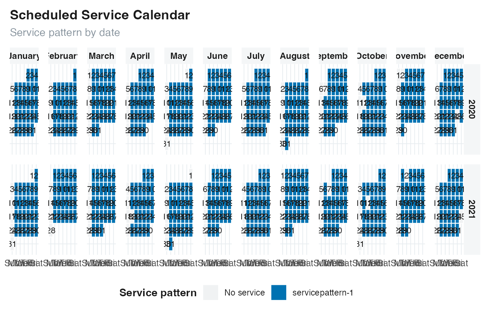
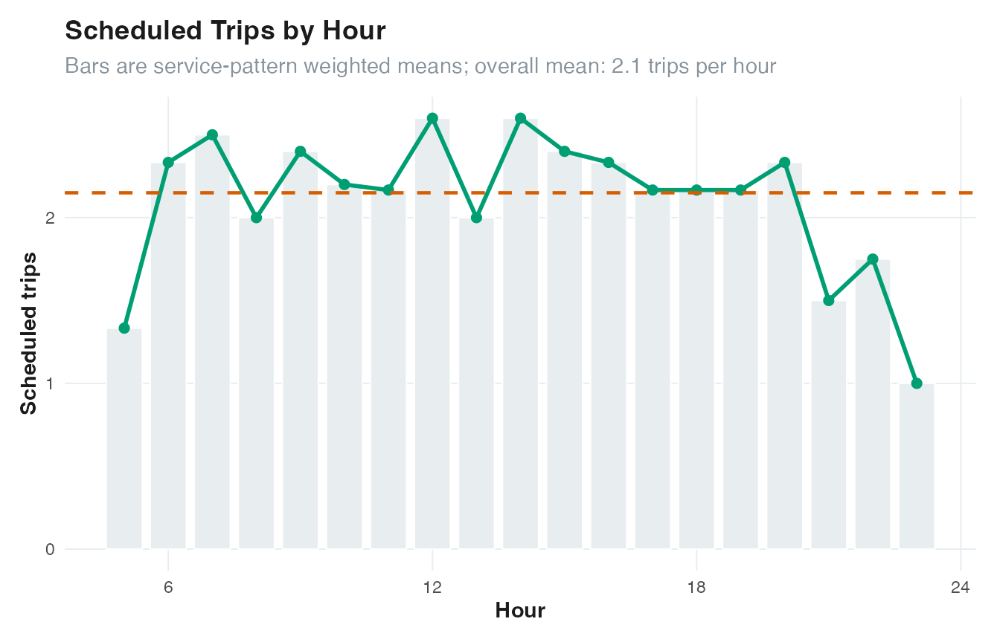
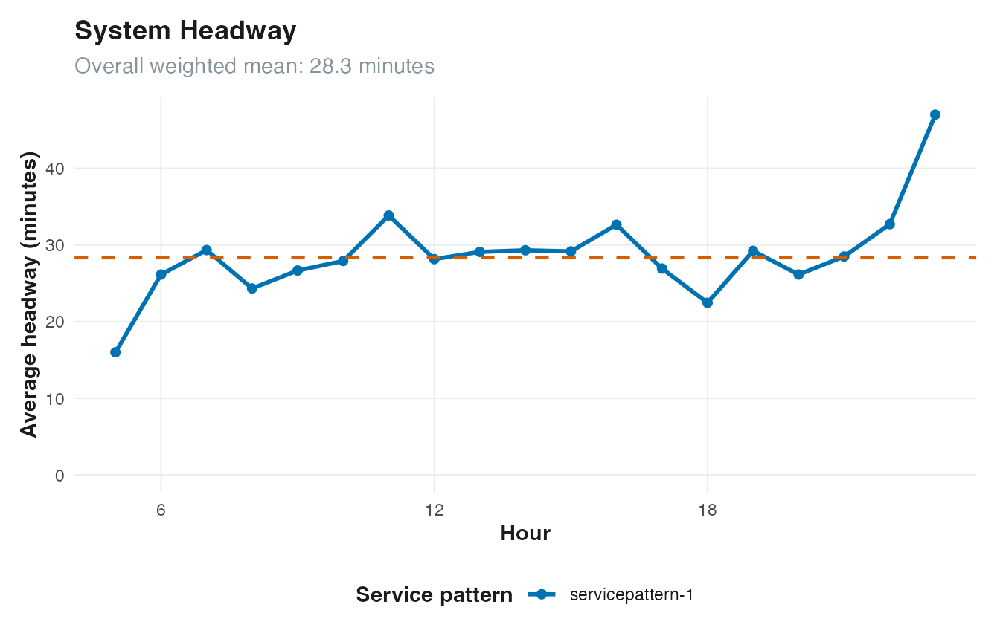

GTFSwizard analyzes scheduled service. Results describe the timetable rather than observed vehicle movements or passenger demand. Pay attention to each function’s aggregation method because it defines the observational unit.
Service patterns
A GTFS service_id identifies one service calendar.
Several IDs can operate on the same date. GTFSwizard assigns the same
service_pattern to dates that have the exact same set of
active services. Consequently, one service_id can belong to
several patterns when the services operating alongside it change.
get_servicepattern(gtfs)
#> # A tibble: 2 × 3
#> service_id service_pattern pattern_frequency
#> <chr> <chr> <int>
#> 1 4 servicepattern-1 614
#> 2 NA No service 116pattern_frequency is the number of dates represented by
that exact active service set. The most frequent active pattern is
therefore a useful default typical day, but it is not necessarily a
weekday and should be interpreted from the feed calendar.
plot_calendar(gtfs, fill = "service_pattern", facet_by_year = TRUE)
Frequency and headway
Frequency counts scheduled departures. Headway measures elapsed
minutes between successive service instances in a comparable group.
Route-level results retain direction_id when it is
available.
head(get_frequency(gtfs, method = "by_route"))
#> # A tibble: 6 × 5
#> route_id direction_id service_pattern pattern_frequency daily.frequency
#> <chr> <int> <chr> <int> <int>
#> 1 6 0 servicepattern-1 614 63
#> 2 6 1 servicepattern-1 614 64
#> 3 7 0 servicepattern-1 614 15
#> 4 7 1 servicepattern-1 614 15
#> 5 8 0 servicepattern-1 614 29
#> 6 8 1 servicepattern-1 614 29
head(get_headways(gtfs, method = "by_route"))
#> # A tibble: 6 × 6
#> route_id direction_id service_pattern pattern_frequency headway_minutes
#> <chr> <int> <chr> <int> <dbl>
#> 1 6 0 servicepattern-1 614 17.0
#> 2 6 1 servicepattern-1 614 16.8
#> 3 7 0 servicepattern-1 614 62.1
#> 4 7 1 servicepattern-1 614 62.1
#> 5 8 0 servicepattern-1 614 37
#> 6 8 1 servicepattern-1 614 37
#> # ℹ 1 more variable: valid_trips <int>Common method names use underscores:
-
by_tripreturns one observation per trip; -
by_routeaggregates by route, direction, and service pattern where applicable; -
by_houraggregates scheduled service by hour; -
detailedreturns stop-call or interval-level observations.
Check a function’s help page because not every method is meaningful for every indicator.
plot_frequency(gtfs)
plot_headways(gtfs)
Duration, distance, speed, dwell time, and fleet
Duration and distance are schedule and geometry properties. Speed combines them, dwell time is departure minus arrival at a stop call, and fleet counts simultaneously active scheduled trip instances.
head(get_durations(gtfs, method = "by_trip"))
#> # A tibble: 6 × 6
#> route_id trip_id direction_id duration service_pattern pattern_frequency
#> <chr> <chr> <int> <dbl> <chr> <int>
#> 1 7 10 0 2400 servicepattern-1 614
#> 2 6 100 1 2160 servicepattern-1 614
#> 3 6 101 1 2160 servicepattern-1 614
#> 4 6 102 1 2160 servicepattern-1 614
#> 5 6 103 1 2160 servicepattern-1 614
#> 6 6 104 1 2160 servicepattern-1 614
head(get_distances(gtfs, method = "by_trip"))
#> # A tibble: 6 × 6
#> route_id trip_id direction_id distance service_pattern pattern_frequency
#> <chr> <chr> <int> <dbl> <chr> <int>
#> 1 7 4 0 17550. servicepattern-1 614
#> 2 7 5 0 17550. servicepattern-1 614
#> 3 7 6 0 17550. servicepattern-1 614
#> 4 7 7 0 17550. servicepattern-1 614
#> 5 7 8 0 17550. servicepattern-1 614
#> 6 7 9 0 17550. servicepattern-1 614
head(get_speeds(gtfs, method = "by_route"))
#> # A tibble: 6 × 6
#> route_id direction_id trips average.speed service_pattern pattern_frequency
#> <chr> <int> <int> <dbl> <chr> <int>
#> 1 6 0 63 38.3 servicepattern-1 614
#> 2 6 1 64 38.3 servicepattern-1 614
#> 3 7 0 15 26.3 servicepattern-1 614
#> 4 7 1 15 25.7 servicepattern-1 614
#> 5 8 0 29 21.9 servicepattern-1 614
#> 6 8 1 29 21.9 servicepattern-1 614
head(get_dwelltimes(gtfs, method = "by_route"))
#> # A tibble: 6 × 6
#> route_id direction_id trips average.dwelltime service_pattern
#> <chr> <int> <int> <dbl> <chr>
#> 1 6 0 1260 0 servicepattern-1
#> 2 6 1 1280 0 servicepattern-1
#> 3 7 0 150 0 servicepattern-1
#> 4 7 1 150 0 servicepattern-1
#> 5 8 0 290 0 servicepattern-1
#> 6 8 1 290 0 servicepattern-1
#> # ℹ 1 more variable: pattern_frequency <int>
get_fleet(gtfs, method = "peak")
#> # A tibble: 3 × 4
#> service_pattern pattern_frequency hour fleet
#> <chr> <int> <dbl> <int>
#> 1 servicepattern-1 614 18 10
#> 2 servicepattern-1 614 6 9
#> 3 servicepattern-1 614 7 9These are scheduled indicators. They do not estimate congestion, reliability, vehicle availability, layover policy, deadheading, or passenger loads unless those effects are already represented in the feed.
Spatial structure
The spatial helpers return standard sf objects. Inferred
shapes and corridor segments connect coordinates with straight lines;
they are not map-matched paths.
stops <- get_stops_sf(gtfs$stops)
shapes <- get_shapes_sf(gtfs$shapes)
nrow(stops)
#> [1] 39
nrow(shapes)
#> [1] 6Hubs summarize stops by their scheduled trip and route connections. Corridors join frequently served consecutive stop pairs and report length in meters.
head(get_hubs(gtfs))
#> Simple feature collection with 6 features and 5 fields
#> Geometry type: POINT
#> Dimension: XY
#> Bounding box: xmin: -38.62687 ymin: -3.895013 xmax: -38.56387 ymax: -3.775791
#> Geodetic CRS: WGS 84
#> # A tibble: 6 × 6
#> stop_id trip_id route_id n_trip n_routes geometry
#> <chr> <list> <list> <int> <int> <POINT [°]>
#> 1 28 <chr [185]> <chr [2]> 185 2 (-38.56387 -3.775791)
#> 2 27 <chr [127]> <chr [1]> 127 1 (-38.62042 -3.895013)
#> 3 26 <chr [127]> <chr [1]> 127 1 (-38.62687 -3.88752)
#> 4 25 <chr [127]> <chr [1]> 127 1 (-38.62556 -3.877935)
#> 5 24 <chr [127]> <chr [1]> 127 1 (-38.62003 -3.867487)
#> 6 23 <chr [127]> <chr [1]> 127 1 (-38.60866 -3.851034)
get_corridor(gtfs, i = 0.2, min_length = 100)
#> Simple feature collection with 1 feature and 4 fields
#> Geometry type: MULTILINESTRING
#> Dimension: XY
#> Bounding box: xmin: -38.62687 ymin: -3.895013 xmax: -38.53248 ymax: -3.720076
#> Geodetic CRS: WGS 84
#> # A tibble: 1 × 5
#> corridor stop_id trip_id length geometry
#> * <chr> <list> <list> <dbl> <MULTILINESTRING [°]>
#> 1 Corridor 1 <chr [20]> <chr [127]> 22953. ((-38.53248 -3.72603, -38.5349 -3.73…Use plot_hubs() and plot_corridor() for the
corresponding network views. The i argument is a share
threshold, not an absolute number of trips.
Choosing a plot
-
plot_calendar()shows active dates, trip counts, or service patterns. -
plot_frequency()andplot_headways()show system service by hour. -
plot_routefrequency()compares routes with a readabletop_nlimit. -
plot_servicespan()shows first departure and final arrival. -
plot_serviceheatmap()compares scheduled departures by weekday and hour. -
plot_routeduration()compares trip-duration distributions. -
plot_servicesupply()compares scheduled vehicle-hours.
All plotting functions return ggplot objects, so labels
and themes can be extended with ggplot2 when needed.